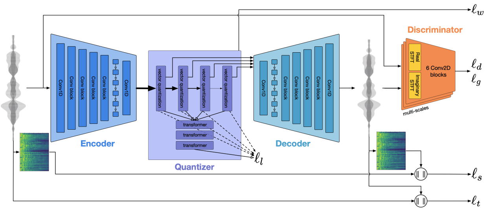
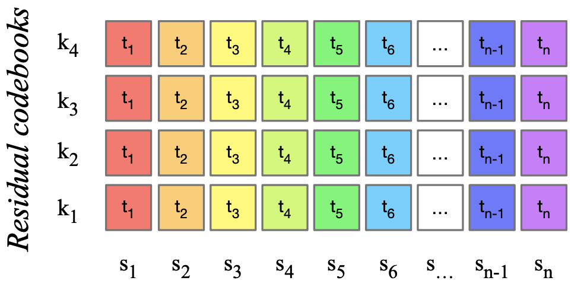
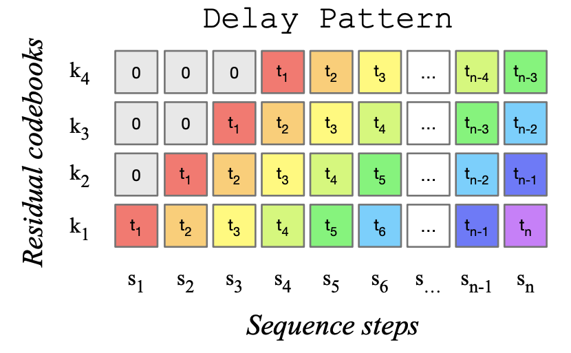

Goal: Build hands-on literacy in neural audio codecs — the same family of models behind MusicGen and EnCodec. You will compute compression ratios, trace tensor shapes from waveform to discrete IDs, work a vector-quantization example by hand, and connect everything back to text tokenization from your foundations unit.
P(wt | w<t). Audio needs an analogous map from waveform → IDs so the same transformer machinery applies to P(at | a<t).V prototype vectors; each row is a “sound atom.”Autoregressive models predict one discrete token per step. Treating each PCM sample as a token seems natural — but the sequence length explodes.
fs = 16,000 → 16,000 numbers per second.T = 10 × 16,000 = 160,000 samples.O(T²) in naive form.160,000 × 16 bits = 2.56 Mbit per channel.T = 10 × 44,100 = 441,000 steps — impractical for GPT-scale attention at full length.F = 10 × 50 = 500.500 × 4 = 2,000 (vs 160,000–441,000 samples).160,000 / 2,000 = 80×.30 × 48,000 = 1,440,000 per channel.
| Stage | Text (BPE) | Audio (EnCodec-style) |
|---|---|---|
| Alphabet size | V ≈ 32k–50k merges | V ≈ 1024–2048 per codebook; K ≈ 4 books |
| Token meaning | Subword string piece | Prototype latent vector (summed across RVQ stages) |
| Encoder | Deterministic merge table on UTF-8 | Learned CNN/Transformer on waveform windows |
| Time axis | One token ≈ part of a word | One frame ≈ 20 ms of audio (at 50 Hz) |
| Decoder | Concatenate subwords → string | Neural upsampling → waveform |
| Failure mode | Unknown unicode / rare typos | Robotic timbre if V too small (see crushing demo) |
Corpus merges teach that "ing" is a reusable piece. Sentence "coding" might tokenize to [code, ing] → IDs [4012, 988].
Audio analogue: a frame’s latent might quantize to RVQ IDs [402, 88, 1201, 55] — four entries whose sum reconstructs the frame latent, like four subword vectors summing to meaning.
NOTE_ON 60 says which key, not how the grand piano in this hall sounds. Codec tokens capture the recording-grade timbre MIDI omits.
The codec learns a compressed representation by reconstruction:
E: waveform window → continuous latent z.Q: z → nearest codebook IDs (information bottleneck).D: quantized latents → reconstructed waveform x̂.Adversarial and perceptual terms push reconstructions to sound good, not merely minimize MSE on samples (which favors blurry audio).

For each frame latent z ∈ ℝD, VQ picks argmink ‖z − ek‖².
z = [0.2, 0.9], codebook (V=4):
| ID | ek | ‖z − ek‖² |
|---|---|---|
| 0 | [0, 0] | 0.04 + 0.81 = 0.85 |
| 1 | [1, 0] | 0.64 + 0.81 = 1.45 |
| 2 | [0, 1] | 0.04 + 0.01 = 0.05 ✓ |
| 3 | [1, 1] | 0.64 + 0.01 = 0.65 |
Output ID = 2, reconstruction [0, 1], error vector [0.2, −0.1].
z = [0.6, 0.1] with same codebook — winner?
ID 1 ([1,0]) with distance 0.17.
z with book 1 → ê(1), residual r(1) = z − ê(1).r(1) with book 2 → add to reconstruction.50 × 4 = 200 tokens/s32,000 × 16 = 512 kbps200 × log₂(2048) = 200 × 11 ≈ 2.2 kbps512 / 2.2 ≈ 230× — explains feasibility of AR modeling.
F = 400; IDs ≤ 400 × 4 = 1600.
The LM predicts the flattened/interleaved stream derived from (F, K), not the 320k floats directly.
Predicting all K books at frame t independently wastes coarse→fine structure. MusicGen applies a delay pattern so coarse books lead fine books across time steps.

500 × 4 × log₂(1024) = 20,000 bits. General: bits ≈ F · K · log₂(V).
Map codec IDs → latents → upsample to PCM waveform for playback.
(F, D).(T,) waveform.Smaller dictionary V → harsher quantization — same principle as tiny codebooks.
8 ← smaller ····· larger → 1024
Adjust the slider, then play. Smaller dictionaries force each chunk onto fewer “prototype” sounds.
50 × duration × K. At V=1024, bits ≈ F · K · 10. Halving effective V (via crushing) increases reconstruction error — listen for timbre snapping and pitch steps.
Space: facebook/MusicGen
gentle lo-fi beat with soft piano. Estimate F = duration × 50, total AR steps ≈ F × 4.distorted electric guitar metal riff. Same duration.Production systems almost always train the codec first, then train (or fine-tune) the language model on frozen codec tokens.
| Phase | What learns | Data | Loss intuition |
|---|---|---|---|
| Codec pretrain | Encoder, decoder, codebooks | Raw audio clips | Reconstruct waveform + perceptual/adversarial |
| LM train | Transformer over discrete IDs | (text, audio) pairs tokenized | Next-token cross-entropy |
| Inference | Nothing (weights frozen) | User prompt | Sample tokens → decode once |
You do not backpropagate from speaker air pressure into the codec during MusicGen inference — the decoder is a fixed “sound card” for token sequences.
[33600, 34240) (640 samples ≈ 20 ms).z42 ∈ ℝ128.(k1, k2, k3, k4) e.g. (402, 88, 1201, 55).ẑ42 = e(1)402 + e(2)88 + …ẑ42 with neighbors to synthesize those 640 samples.During generation, the LM never sees z directly — it predicts the four IDs using past IDs + (Lesson 4) text condition.
| Myth | Reality |
|---|---|
| “Spectrogram pixels are the tokens” | MusicGen uses learned codec IDs, not raw STFT bins (other models may differ). |
| “Each token is one note” | Tokens are ~20 ms acoustic atoms; one note may span many frames. |
| “Bigger V always better” | Diminishing returns; training stability and data matter too. |
| “Decoder invents new sounds” | Decoder only combines codebook entries it was trained on. |
320,000 / 2,000 = 160× fewer autoregressive steps than sample-level (same clip length).
500 × log₂(2048) = 500 × 11 = 5500 bits (~687 bytes). RVQ uses K=4 for quality, not because one book lacks bits.
When you open an AudioCraft or Hugging Face model card, map fields to this lesson:
| Card field | Maps to |
|---|---|
sample_rate 32 kHz | Output T = duration × 32000 |
frame_rate 50 Hz | F = duration × 50 |
num_codebooks 4 | K in shape trail |
codebook_size 2048 | V in softmax / bit formula |
audio_channels 1 | Mono vs stereo waveform shape |
Practice: for a 15 s generation, compute F, total tokens, and approximate bits before clicking Generate.
| Quantity | Formula |
|---|---|
| Samples T | duration × sample_rate |
| Frames F | duration × 50 (MusicGen) |
| AR steps | F × K (K=4) |
| Bits (ideal) | F × K × log₂(V) |
| Compression vs PCM | (sample_rate × bits_per_sample) / (50 × K × log₂(V)) |